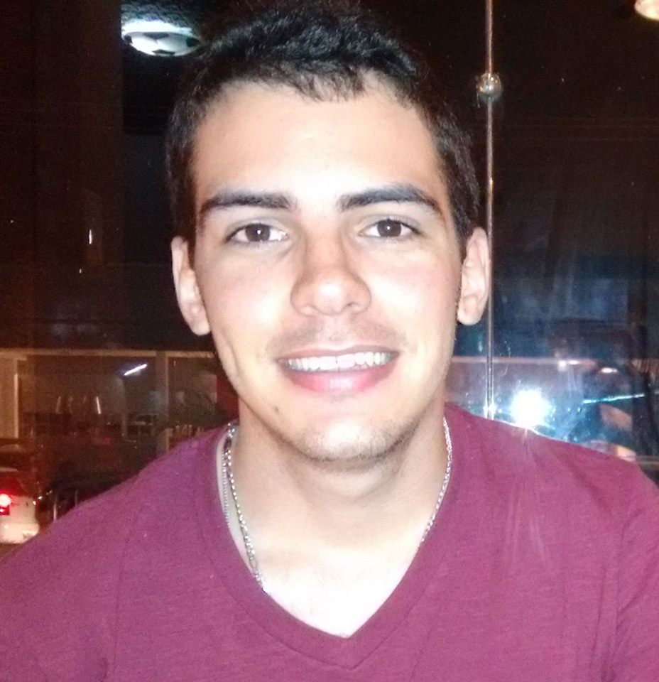
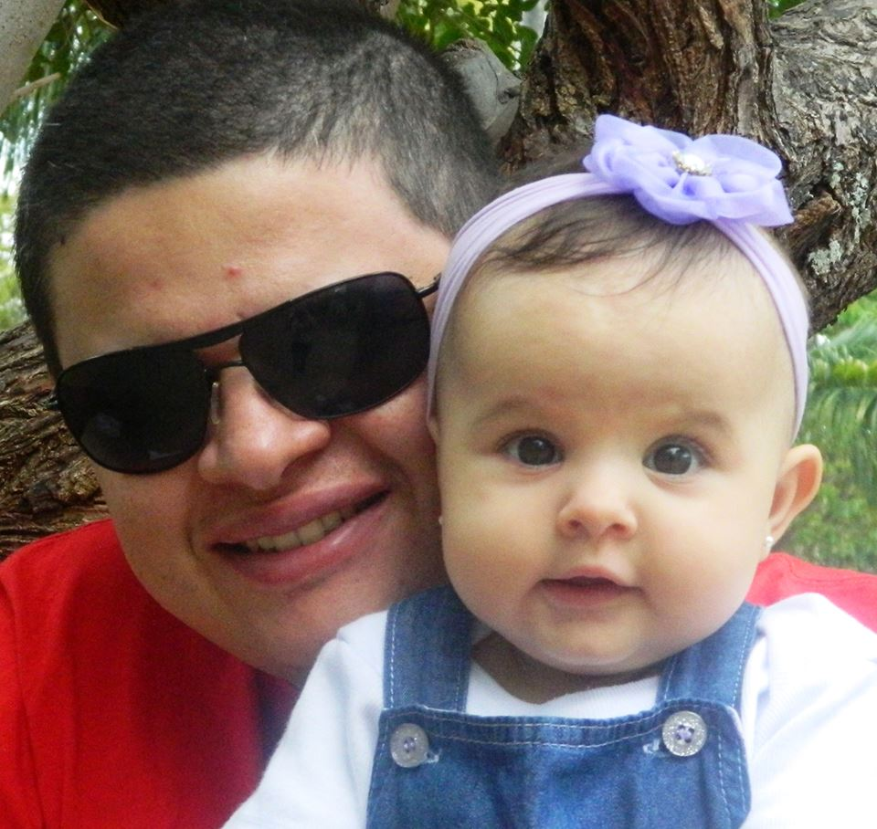
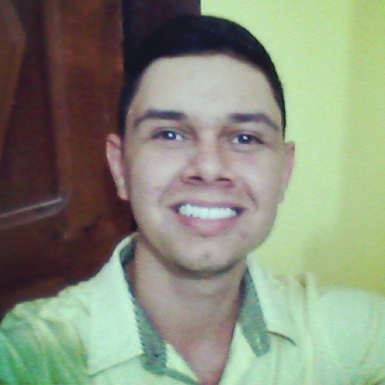

|
O aplicativo propõe integração entre o usuário e uma rede de amigos para fazer companhia durante as viagens de ônibus dentro da sua cidade, visando conectar o maior número possível de pessoas para esperar ônibus em grupo, de forma a inibir a ocorrência de assaltos e outros delitos frequentes. |
|

Célio Barros |

João Paulo Targino |

Leonardo Avelino |

Paulo César |

Ramon Bezerra |
Rennan Marques |